Prerequisites
Before you start
- Select Foresight Packaging Solutions LLC as the active company. Both warehouses and the transfer must belong to this company.
- Confirm you can open Inventory → Operations → Warehouse Transfers. An Inventory user can operate loads; an administrator handles warehouse and route configuration.
- Confirm warehouse 170 holds the stock being shipped, and Celestial – California is the destination. Review available stock and existing reservations before planning the load.
- Use the existing route Celestial - California: Supply Product from 170. The verified route is 170/Stock → 170/Output → Inter-warehouse transit → CELCA/Stock. Do not select a route in the opposite direction.
- If the route is missing, ask an Inventory administrator to review Inventory → Configuration → Warehouses → Celestial – California, its resupply-from-170 setup, and the generated route under Configuration → Routes. Multi-step route settings must be enabled to inspect routes. Have the administrator test the complete chain in sandbox before use.
- Confirm source/destination shipping addresses, carrier arrangements, product stock units, and any lot/serial requirements. The source is your own 170 warehouse; the destination being a 3PL does not make this an outgoing customer release from Celestial.
01 · Planner
Create the transfer plan
- Open Inventory → Operations → Warehouse Transfers and select New.
- Verify Company, choose Source Warehouse: 170, then Destination Warehouse: Celestial – California.
- Verify Route: Celestial - California: Supply Product from 170.
- Set Planned Date to the expected arrival and enter a meaningful Load / Carrier Reference so this load can be found later.
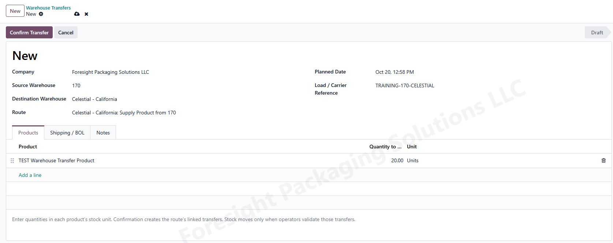
02 · Planner
Add products in their Odoo stock units
- On Products, select Add a line and choose the existing product. Repeat for each item on the load.
- Enter Quantity to Ship and check the displayed Unit. This transfer builder expects the quantity in the product’s stock unit.
- If Unit is Units, convert packaging to individual units: two boxes containing 10,000 each means 20,000 Units. Do not enter 2 when you intend to send 20,000 individual units.
- Save and review every product and quantity. The training screenshot shows 20 Units solely as an example.
Different fields have different meanings: in Celestial product mapping, Odoo units per source unit means units in one source box/pallet. In this transfer’s Quantity to Ship, enter the total stock-unit quantity being shipped. Product packaging definitions and physical Odoo packages are also separate concepts.
03 · Planner
Complete shipping and BOL information
- Open Shipping / BOL.
- Enter Carrier / Will Call and verify the Load / Carrier Reference.
- Enter the actual trailer/container, seal, pallet/handling-unit count, gross weight in pounds, freight terms and shipping instructions when known. Do not infer pallet count from product quantity or use example weights.
- Review the warehouse shipping addresses before producing the BOL. Missing address information should be corrected by the administrator.
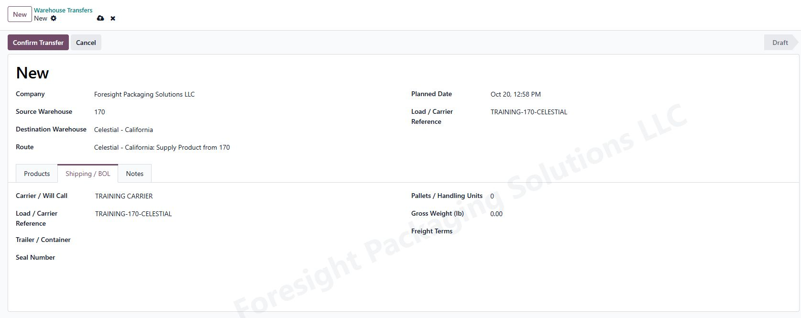
04 · Planner
Confirm, review the route legs, and print documents
- Select Confirm Transfer once the draft is correct. Record the assigned WHS reference.
- Open the Transfers tab or All Transfers. For this route, expect a 170/PICK, a 170/OUT, and a CELCA/IN operation. Later legs can show Waiting Another Operation until their predecessor is done.
- Select Print Pick Ticket for the source picking instructions. Select Print Shipping BOL for the shipping document; review the downloaded PDF before handing it to the carrier.
- Use Shipping and Receiving to open the corresponding linked operations. Use the same load’s operations throughout, rather than creating a second unrelated transfer.
When Print with QZ appears, choose the intended printer and copies, then select Print. For document review before printing, select Download PDF. An administrator can assign document printer defaults in Inventory → Configuration → QZ Printer Rules. QZ document printing must be installed and enabled in the environment you are using.
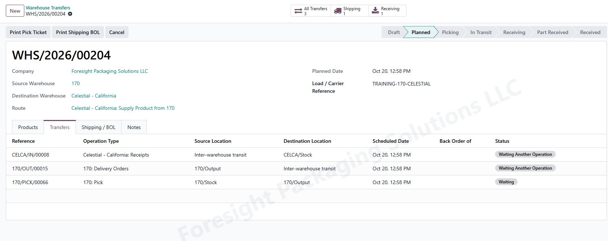
This direction uses Confirm Transfer. The Confirm & Email BOL workflow is for a load dispatched from a source managed by a 3PL. Send to Celestial on a customer delivery is a separate customer-fulfillment workflow.
05 · Warehouse 170
Pick into 170/Output
- Open the load’s 170/PICK through Transfers or All Transfers. Verify 170/Stock → 170/Output and the correct WHS source document.
- Select Check Availability when reservations need refreshing. Investigate Not Available before proceeding; do not force a negative-stock shipment.
- Use Barcode or the operation’s quantity/details controls to record what was actually picked. Verify source bins and existing lots/serials when applicable.
- If the location-routing module generates 160 crew/location child tickets, work those tickets first and follow the parent pick’s completion controls. Do not enter the same physical pick twice.
- Select Validate after picking is physically complete. If short, record only the actual quantity and review the native backorder decision.
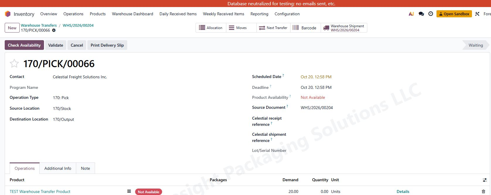
06 · Warehouse 170
Record departure into transit
- Return to the WHS load and select Shipping to open its 170/OUT.
- Confirm the pick is done and the shipping source is 170/Output. The linked route sends this operation to Inter-warehouse transit, not directly into Celestial stock.
- Review loaded quantities, product units, lots/serials and the carrier/BOL. Enter only the quantity actually leaving 170 and complete any required delivery/pickup-proof controls.
- When the truck physically departs, select Validate and finish any required backorder or approval dialog.
- Verify the dispatch is Done. Return to the load and review Shipped and In Transit. Do not receive the load merely because its dispatch is complete.
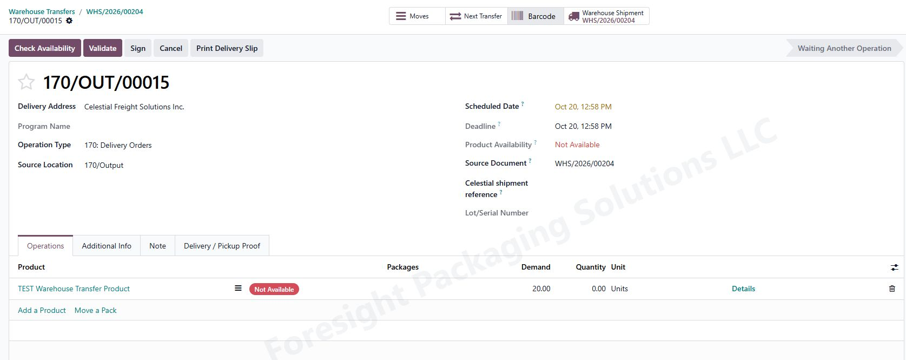
Inventory overview
Track loads in transit
- Open Inventory → Overview and find the In Transit box. It covers Warehouse Transfers loads only.
- Choose 170 or Celestial – California under To or from warehouse. The filter includes loads in either direction for that warehouse and within your selected companies. Use the refresh icon after completing operations elsewhere.
- Select View Items to see the product, original load source/destination, stock unit and in-transit quantity. Select View Loads or Open Load to review linked transfers and evidence.
- The box counts distinct loads and products. In-transit quantity is net shipped minus net arrived: confirmation or picking alone does not add an item. Partial arrivals reduce it; full arrival removes it even if storage is unfinished. A closed-short load can still have goods in transit.
- Returns are netted into these balances. The warehouse columns identify the original load route; use the linked transfers to review actual return direction. This box is read-only and does not move stock.
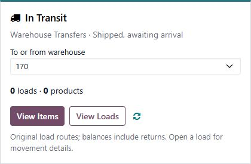
Inventory administrator
Show or hide overview boxes
These settings change visibility for everyone. They do not archive the operation type, disable its routes, change transfers or move stock. All boxes start enabled.
Receipts, Pick, Delivery Orders and other operation boxes
- Open the box’s ⋮ → Configuration, or go to Inventory → Configuration → Operations Types.
- Open the exact operation type and verify its Warehouse and Company. For example, 170 Internal Transfers is separate from Celestial Internal Transfers.
- On General, uncheck Show on Inventory Overview to hide that box, or check it to show the box.
- Save, return to Overview, and refresh the page. A hidden operation is still listed in Operations Types, so you can turn the checkbox back on there.
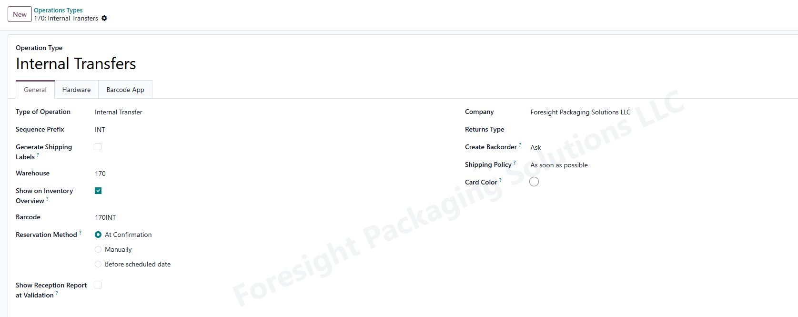
Immediately after a module update, reopen Inventory from the Home menu once so the overview loads its updated settings.
The In Transit box
- Select the box’s Configuration gear, or open Inventory → Configuration → In Transit Overview.
- Change Show on Inventory Overview and select Save.
- Refresh Overview if needed. If the box is hidden, the Configuration menu remains available to enable it again.
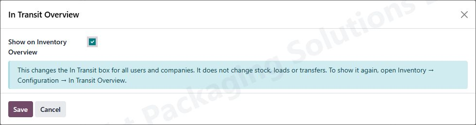
For a personal selection instead, use the standard operation boxes’ stars and the Favorites filter, then save your search as a default. The shared visibility checkbox determines whether a standard box is available on Overview at all.
07 · Receiving coordinator
Put Celestial’s matching reference on the receipt
- Open the load’s Receiving operation, normally CELCA/IN.
- Verify Operation Type: Celestial - California: Receipts and Destination Location: CELCA/Stock.
- If using Celestial Inventory transaction verification, enter the exact PO/freight-bill reference shown on Celestial’s receipt in Celestial receipt reference. Save it before running the import. The example TRAINING-PO-001 is a placeholder; never use it for a real receipt.
- Keep the generated WHS Source Document for traceability. Do not put an inbound receipt reference in the Celestial shipment reference field on the 170 dispatch; that field is for matching shipments out of Celestial.
- Verify mappings exist for every Celestial item/source-unit pair, with the correct Odoo product and per-source-unit conversion. Different source pack sizes require their own mappings.
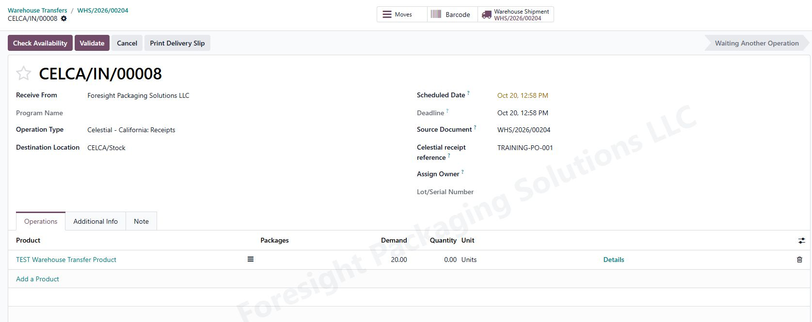
08 · Receiving coordinator
Receive only confirmed arrivals
Manual receiving
- Wait for Celestial’s receipt/put-away evidence and verify that the related 170 dispatch is done.
- On the existing CELCA/IN operation, record the actual quantity received. Use Details for destination, quantity, physical packages and existing lots/serials as applicable. Use the displayed Odoo unit.
- Review shortages or damage, then select Validate and finish the normal backorder and any required receipt-approval dialogs.
- If the destination uses separate Input/Quality/Storage operations, complete the remaining linked put-away operations after physical storage. In the captured one-step setup, the receipt goes directly to CELCA/Stock.
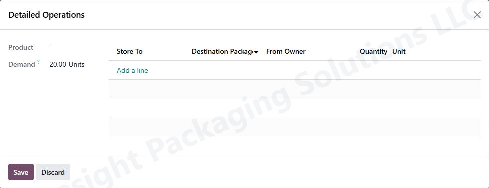
Receiving through Celestial Inventory
- An administrator verifies the correct company, Celestial warehouse, mapped products/conversions and Import transactions from date in Celestial Stock → Connection Settings.
- Use Update Now for receipt/shipment transactions, or the configured Automatic Receipt & Shipment Sync schedule. Sync Now refreshes stock comparisons; it does not process receipts.
- The connector reads completed Celestial Put-Away evidence and matches an existing confirmed receipt using its exact reference/name/source document. Eligible, uniquely matched records can complete the native receipt and change inventory.
- Review Celestial Stock → Receipts & Shipments. If a record is Needs Review, inspect the reason, select the correct existing receipt where appropriate, correct the underlying issue and use Retry Verification.
- Verify the original Odoo receipt and its actual completed quantity. Do not create another receipt or manually record the same quantity again if the connector has already completed it. Tracked products, detailed packages/bins, excess quantities or unresolved matches require review rather than assumed automatic processing.
09 · Planner
Check the completed load
- Return to Warehouse Transfers, open the same WHS record and review Products.
- For a fully completed load, verify Shipped, Arrived and Stored against the real quantities; In Transit and Remaining should be zero. Remaining is the planned quantity not yet stored.
- Review all linked transfers and backorders. Arrived means across the receiving warehouse boundary; Stored means in its stock location. They can differ with multi-step receiving.
- Check the relevant products’ On Hand locations to confirm stock has left 170/transit and is at Celestial. Keep BOL, dispatch and receipt evidence with the load through the normal attachment process.
- After transaction records and mappings are current, a new stock comparison may help reconcile remaining differences. Investigate timing, mappings and unprocessed transfers before proposing an inventory adjustment.
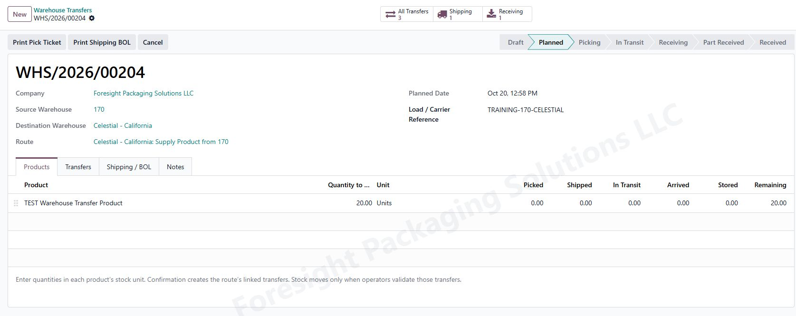
Exceptions
Shortages, backorders and corrections
- Waiting Another Operation: finish the predecessor in the same chain; do not bypass the pick or dispatch.
- Not Available: review source stock, reservations, bins and lots. Quantity on hand elsewhere or in the wrong company is not available stock at 170.
- Partial pick, shipment or receipt: enter actual quantities. Choose the native Create Backorder option when the remainder is still expected. Use the close/no-backorder choice only when the remainder is deliberately canceled. Review the resulting open transfer and load totals.
- Needs Review in the connector: check exact references, duplicate matches, mappings/conversions, source dates, quantities, prior completion and available transit stock. Select the correct existing operation and retry only after resolving the reason.
- Route or menu missing: verify active company, access rights, installed module version and configured source/destination resupply route. The connector’s company/warehouse settings do not create the warehouse-transfer route.
- Wrong unstarted load: cancel it and its open operations. A canceled load can create a Revised Draft. Once movement is done, use the supported native return/correction process; canceling a plan must not be treated as reversing completed inventory.
- Closed Short or returns: these are exceptions to review, not a fully received load. Returns reduce net received totals and can leave Remaining above zero.